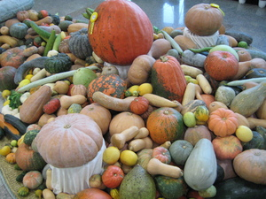

(S) ϣⲱⲡⲉ, ϣⲱⲃⲉ, ϣⲱⲱⲡⲉ, ϣⲱⲱⲃⲉ, ϣⲟⲟⲃⲉ, ⲉϣⲱⲡⲉ, ϣⲱⲡ- (ⲡ/ⲧ)
(B) ϣⲱⲡⲓ, ϣⲟⲡ (ⲡ/ⲧ)
(
noun male/female
)
Crum:
580b
cucumber, gourd
[
σικυσ
,
σικιδιον
]
1953-1-1
1953-2-1

1953-2-2
(S) ϣⲱⲡⲉ, ϣⲱⲃⲉ, ϣⲱⲱⲡⲉ, ϣⲱⲱⲃⲉ, ϣⲟⲟⲃⲉ, ⲉϣⲱⲡⲉ, ϣⲱⲡ-
(B) ϣⲱⲡⲓ, ϣⲟⲡ
(S) ⲃⲣⲁ ϣ.
cucumber seed
cucumber meal
Crum:
581a
580
581
Home
prev
Key:
1953
next
Contact